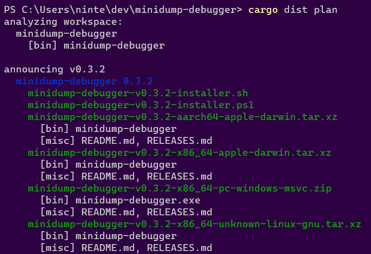

Way-Too-Quickstart
TLDR: cargo-dist is a souped up version of
cargo buildwhich handles building tarballs and installers. It also knows how to generate Github CI for orchestrating itself and uploading its output to a new GitHub Release. You can use cargo-dist if you don't care about that CI stuff, but this guide assumes that you do.This quickstart is a bit too quick because there's some important nuances to "announcing and building releases" that depend on the way you like to structure and version your workspace. We will blatantly ignore those nuances and show you the Happiest Happy Path (a workspace with one crate that defines a binary). Checkout the workspace guide for more details on what you should actually do.
Setup
Setting up just requires you to install cargo-dist and then run cargo dist init in your Cargo workspace. This command interactively walks you through configuration options, and should be run again whenever you want to change your settings or want to update cargo-dist.
Just to really emphasize that: cargo dist init is designed to be rerun over and over, and will preserve your settings while handling any necessary updates and migrations. Always Be Initing.
Initial Setup
Since this is the way-too-quickstart, we pass --yes to auto-accept all defaults on our first setup!
# install tools (build from source is the most portable option)
cargo install cargo-dist
# setup cargo-dist in your project (--yes to accept defaults)
cargo dist init --yes
git add .
git commit -am "chore: wow shiny new cargo-dist CI!"
The one-time setup will add a decent default configuration to your root Cargo.toml and generate CI for orchestrating itself in .github/workflows/release.yml. If the CI file isn't created, this probably means you don't have repository = "https://github.com/..." consistently set in your Cargo.toml(s).
Adding Installers
The most common reason to update cargo-dist or mess with its config is to add a new installer, which is basically our blanket term for anything more fancy than tarballs (curl-sh scripts, npm packages, msi installers, ...).
You can skip this step for now and just test out the basics the initial setup gives you. Each individual installer should have a guide that assumes you did the initial setup.
The tl;dr of those guides is "run cargo dist init again, select the installer you want to add, and fill in any extra details that are needed".
Test It Out
There are a several ways to test out cargo-dist before committing to running a proper release:
- build for the current platform (
cargo dist build) - check what CI will build (
cargo dist plan) - check the release process on pull-requests
Build For The Current Platform
cargo dist build

The build command will by default try to build things for the computer you're running it on. So if you run it on linux you might get a tar.xz containing your binary and an installer.sh, but if you run it on windows you might get a zip and an installer.ps1.
cargo-dist will then spit out paths to the files it created, so you can inspect their contents and try running them (note that installer scripts probably won't be locally runnable, because they will try to fetch their binaries from GitHub).
Check What CI Will Build
cargo dist plan

The plan command should be running the exact same logic that cargo-dist's generated CI will run, but without actually building anything. This lets you quickly check what cutting a new release will produce. It will also try to catch any inconsistencies that could make the CI error out.
Check The Release Process On Pull-Requests
As of cargo-dist 0.3.0, we now by default run the "plan" step of your release CI on every pull-request so that we can catch breakage to your release process as early as possible. This will work even for a pull-request that sets up cargo-dist for the first time, so you can be confident you're landing something that works.
You can also crank this up by setting pr-run-mode = "upload", which will run all the build steps as well, and upload the results to the PR's Workflow Summary as an "artifacts.zip". This is great for making sure the windows build works even if you only have a linux machine, or vice-versa. Although you should probably only keep it on temporarily, as it's very slow and wasteful to build all those shippable artifacts for every PR.
Cut A Release (Trigger Github CI)
cargo-dist largely doesn't care about the details of how you prepare your release, and doesn't yet provide tools to streamline it. All it cares about is you getting your release branch into the state you want, and then pushing a properly formatted git tag like "v0.1.0". Here's a super bare-bones release process where we're releasing by just pushing a bunch of stuff to main branch (but it would work just as well with PRs and release branches):
# <manually update the version of your crate, run tests, etc>
# commit and push to main (can be done with a PR)
git commit -am "release: version 0.1.0"
git push
# actually push the tag up (this triggers cargo-dist's CI)
git tag v0.1.0
git push --tags
# publish to crates.io (optional)
cargo publish
The important parts are that you update the crates you want to release/announce to the desired version and push a git tag with that version.
At this point you're done! The generated CI script should pick up the ball and create a Github Release with all your builds over the next few minutes!